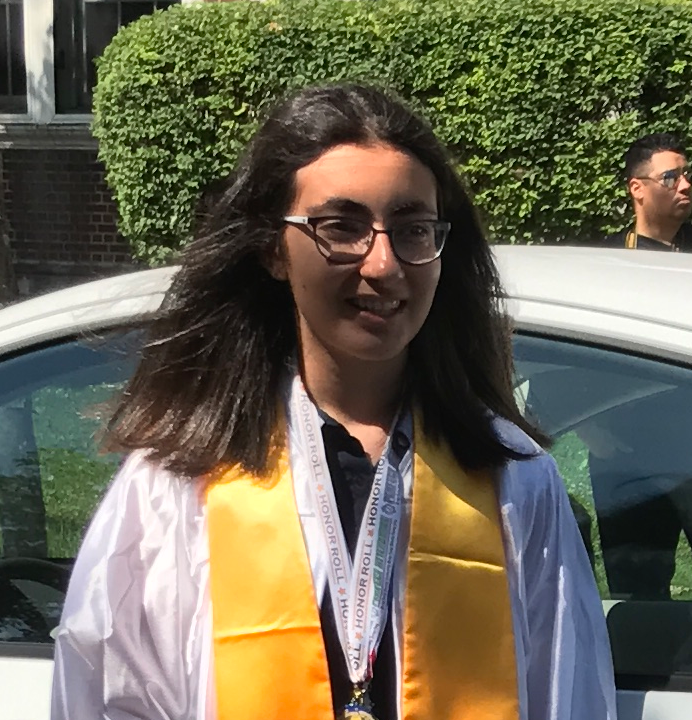

Hi there! My name is Hazal Ceylan, and I'm 15 years old; I would like to tell you about my education life so far and my accomplishments.
I'm currently a student in Lane Tech College Prep High School in Chicago. I attended Norman A. Bridge Elementary School since kindergarten, and
I graduated from 8th grade in June 2017. I was a honor roll student throughout middle school, and
I was also a honor student in my graduation. I was accepted into Lane Tech, a selective enrollment high school.
During 6th grade, my friends and I entered a competition, called "The Future City Competition"; This was a STEM based event.
We competed with 36 other teams, and after presenting to several judges, my friends and I were in the top five teams. After that, we presented to different judges, and won 5th place. Our project
also received the "Best Design" and "Best Use of Water Sources" award.
During 7th and 8th grade, I entered my school's science fair, receiving an "Excellence" award in 7th grade and a "Honorable Mention" in 8th grade. In 8th grade, I also was qualified for a spelling bee
tournament in my school. In Lane Tech, I am an Alpha student, meaning my classes are mostly based upon science and math. I also was a member of Student Council in my middle school, and I'm also
a member of Student Council in Lane Tech. I can speak three languages, including English, French, and Turkish.
I enjoy learning about history and science, especially astronomy. You can also find out more about my talents and hobbies on the other page!